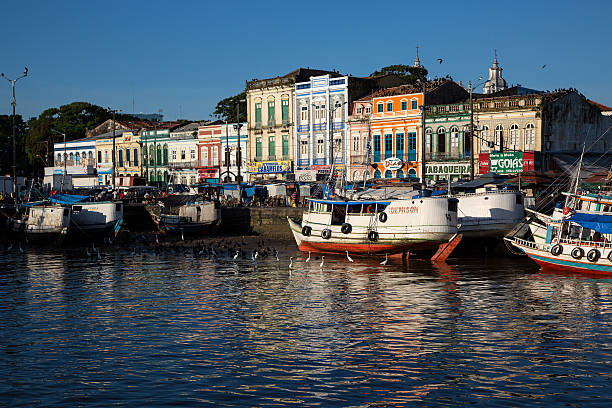

O Pará é um estado da Região Norte do Brasil, com capital em Belém. É conhecido por sua grande extensão territorial e por ser uma área rica em biodiversidade da Floresta Amazônica. O estado tem uma economia baseada na mineração (ferro, bauxita), agricultura, pesca e indústria. O Rio Amazonas e seus afluentes são importantes para o transporte e a vida da população local. A cultura paraense é rica, com influências indígenas, africanas e portuguesas, destacando-se festas tradicionais como o Círio de Nazaré.

Voltar